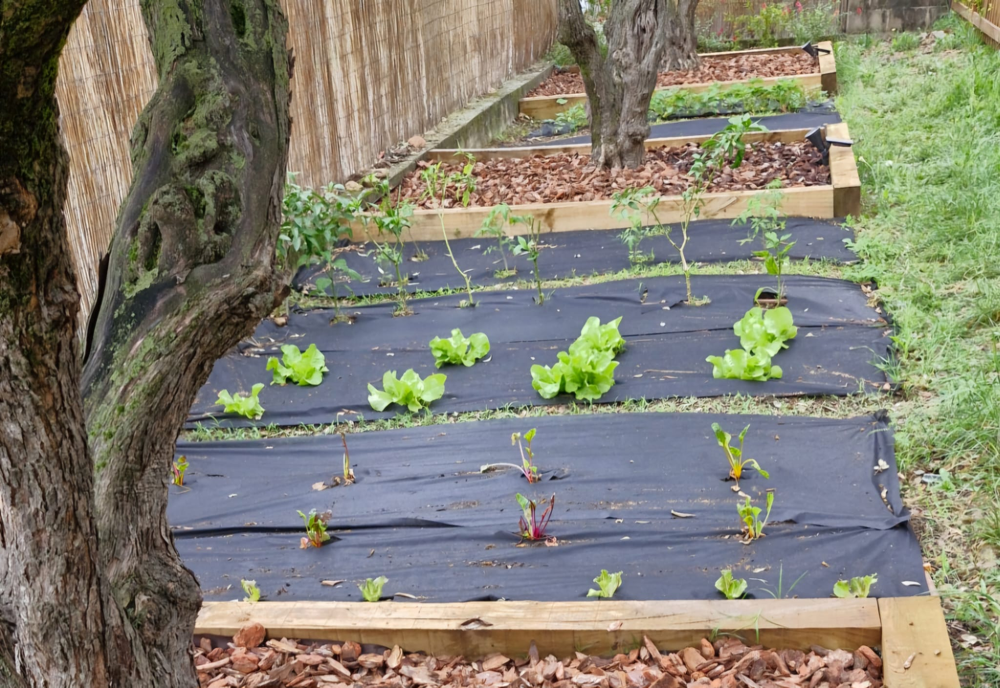

Observar com creix el planter fins a convertir-se en enciams, tomates i hortalisses genera una curiositat especial per la biologia i els cicles de la natura.
És un laboratori viu a casa, on aprenc sobre la paciència, els regs i la satisfacció d'auto-proveir-se d'aliments frescos i sans.